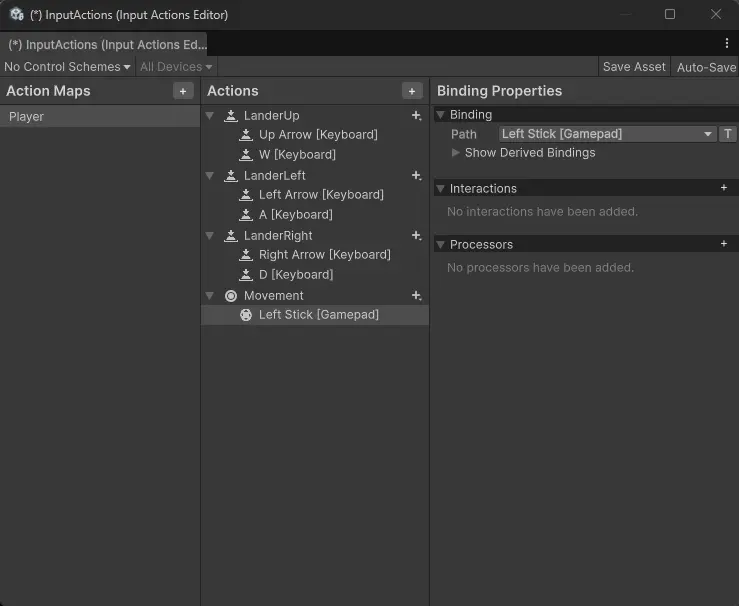

Course Reference and Asset Source：Youtube-Code Monkey
Project Overview
《Lua Lander》是一个受经典游戏《Lunar Lander》启发的 2D 物理小游戏，核心玩法是操控小型飞船在外星地表安全着陆。
“Lua Lander” is a 2D physics-based mini game inspired by the classic arcade game Lunar Lander. The core gameplay revolves around carefully piloting a small spacecraft to land safely on an alien surface.
Key mechanics of the original Lunar Lander include:
- Using thrust and rotation to control the ship’s direction and velocity
- Avoiding crashes caused by excessive speed or steep landing angles
- Gently touching down on designated landing pads to earn higher scores
- Managing limited resources: speed, angle, and fuel

“Lua Lander” is a faithful recreation and expansion by Code Monkey, a well-known game development creator on YouTube. While preserving the original mechanics, the project introduces several enhanced gameplay features:
- More nuanced landing validation based on both velocity and angle
- Multiple landing platforms with score multipliers
- Fuel consumption system that adds flight cost management
- Coin collection for bonus points
- Thruster visual effects powered by a particle system and event-driven logic
Beyond gameplay, the project also includes system-level improvements:
- A complete UI system
- A game state machine (Start → Playing → Game Over)
- Multi-level design using prefabs rather than separate scenes
- Level preview with Cinemachine and a custom 2D zoom solution
- Multi-input support (keyboard, gamepad, and touchscreen)
- Dedicated screens for main menu, pause menu, and game over
- Integrated sound effects and background music system
Learning Goals
Code Monkey tends to build games with complex systems, large-scale projects, and high maintainability requirements. Consequently, his tutorials—regardless of difficulty level—consistently adopt professional-grade structures that demonstrate how to integrate clean code principles and industry best practices into real-world Unity projects.
From this project, I aim not only to understand his problem-solving approaches and techniques for writing clean, readable code, but also to learn how to properly architect a game project and cultivate genuine game engineer thinking—laying a solid foundation for building my own complex projects in the future.
Therefore, I’ll closely follow along with his development process, carefully documenting his methods and design decisions so I can apply them to my own work later.
Development Breakdown
The game was developed roughly in the following sequence:
- Post-processing effects (can be added at any stage)
- Lander implementation
- Physics-based movement
- Visual effects for thrusters
- Terrain creation
- Using Sprite Shape
- Camera follow system
- Implemented with Cinemachine
- Background setup
- Landing logic
- Landing validation (based on speed and angle)
- Landing detection on platforms
- Landing pad prefabs
- Prefab Variants (platforms with different sizes and score multipliers)
- Dynamic visual indicator for score multiplier
- Fuel system
- Fuel capacity management
- Lander collecting fuel pickups
- Coin collection (implemented similarly to fuel)
- GameManager
- UI system
- Stats panel (fuel, score, etc.)
- Thrust direction indicator
- Fuel progress bar
- Game Over UI
- Final score and stats summary
- Restart button
- Game state management
- Start
- Restart
- Game Over
- Explosion VFX
- New levels
- Built using prefabs (not separate scenes)
- Minimap / overview map
- Input System
- Keyboard/button input
- Touch input
- Joystick/gamepad support
- Main Menu Scene
- Pause UI
- Triggered by UI button or Esc key
- Game Over Scene
- Displays total score
- Button to return to main menu
- SoundManager & MusicManager
- Persistent background music across level transitions
- Volume control buttons
- Polish (final touches, tuning, and refinement)
Key Insights and Critical Steps
PostProcessing
Visual enhancements like Bloom and Vignette were applied using Unity’s Volume → Global Volume → Add Override system. This affects both the in-game view and the Scene/Game window background. While only two effects were used here, Unity’s post-processing stack offers many more parameters—exposure, color grading, depth of field, etc.—that can be explored later as needed for mood, polish, or visual clarity.
Separation of Visuals and Logic
A powerful architectural pattern used in this project:
- Create an empty root GameObject to hold all logic scripts (movement, physics, state, input handling, etc.).
- Attach the Sprite Renderer (or any visual element) as a child object, solely responsible for rendering.
- Additional visual elements—like particle effects, trails, or decals—are also added as separate child objects.
This approach, though simple, delivers significant benefits:
- Decoupled logic and presentation
Logic scripts no longer depend on visual components (e.g.,
SpriteRenderer,Animator). They operate purely on data and state, making code cleaner, more testable, and easier to debug. - Effortless visual iteration Swapping sprites for animations, 2D art for 3D models, or changing visual styles becomes trivial—just replace or modify child objects. No need to touch core logic.
- Independent visual transformations The visual child can rotate, scale, shake, or animate without affecting the parent’s stable transform—critical for effects like screen shake, hit reactions, or spinning thrusters while maintaining consistent physics behavior.
- Precise control over collision and logic origin The root object’s transform serves as the true “center” for physics, AI, or gameplay logic, unaffected by artistic offsets in sprite pivots or mesh origins.
- Prefab flexibility and reuse The same logic prefab can be paired with different visual variants (e.g., themed skins, difficulty-based appearances) simply by swapping child prefabs—ideal for scalable, maintainable projects.
Code Clarity Matters
Even when optional, explicitly declare access modifiers (e.g., private, public, protected).
While C# defaults class members to private and interface methods to public, writing them out improves readability—especially in team environments or when reviewing code months later. Clear intent = fewer bugs and faster onboarding.
Input Handling in Unity
As of Unity 6, both input systems remain available:
- The legacy Input Manager (
Input.GetKey, etc.) - The newer, more robust Input System package (with support for keyboard, gamepad, touch, and custom devices)
This project uses the new Input System, which enables:
- Unified handling of multiple input devices (keyboard, controller, touchscreen)
- Clean separation of input actions from gameplay logic
- Runtime rebinding and better platform portability
For future projects targeting multiple platforms (especially mobile + desktop + console), adopting the new Input System is strongly recommended—it aligns with modern Unity best practices and scales far better than the legacy approach.
|
|
Input Placement
Generally, input should be placed in Update(), because Update checks every frame for input. However, in this project, input can be directly placed in FixedUpdate() because we’re using isPressed—meaning that as long as a key is held down (isPressed / GetKey), it will still be detected even when checked at the fixed timestep of FixedUpdate.
However, if you’re using APIs that detect the exact moment a key is pressed or released (GetKeyDown / GetKeyUp), it’s recommended to place them in Update(), as they might be missed in FixedUpdate.
Additionally, any physics-related updates must always be placed in FixedUpdate().
If you must put movement logic in
Update(), always multiply byTime.deltaTimeto ensure consistent speed across computers with different framerates. Although you don’t need to multiply byTime.fixedDeltaTimeinFixedUpdate, adding it doesn’t hurt.
Coordinate System Setup
Because we’ve adopted the visual/logic separation approach, we must set the gizmo coordinate system to Pivot and Local.
If set to Center, the pivot point becomes the center between the parent and child objects. Setting it to Pivot ensures each object uses its own origin as the center.
In this project, we want the lander to move upward relative to its own orientation when the up arrow key is pressed. Therefore, the coordinate reference must be set to Local. If set to Global, pressing the up arrow would always move the lander toward the screen’s top, regardless of its current rotation.
Landing Implementation Logic
Landing validation has two aspects:
- The ship must be nearly upright upon landing.
- The ship must land gently (at low speed).
For landing softness, we use Collision.relativeVelocity—a read-only property of the Collision class that represents the relative linear velocity between the two colliding objects.
For landing angle validation, we use the dot product between two vectors: the object’s local up vector (transform.up) and the world’s up vector (Vector2.up).
|
|
How to determine appropriate threshold values? If you’re unsure what value to use for a certain condition, print it out in the console and observe the actual values during gameplay under different scenarios. In this project, the landing/crash thresholds were determined exactly this way.
Don’t Use Strings to Identify Game Objects
Strings should only be used for display text—never for finding objects or relying on Unity’s built-in Tags. It’s extremely error-prone: a typo, incorrect capitalization, or an accidental trailing space will cause the lookup to fail silently.
Use component-based queries instead.
|
|
Thruster Visual Effect Implementation
Again, for the sake of decoupling, Lander.cs should contain no visual-related code. Therefore, events are used to trigger effects.
Additionally, the Particle System—like transform.position—is read-only, meaning you cannot modify it directly. Instead, you must access and adjust it indirectly through its EmissionModule:
|
|
Time.deltaTime and Time.fixedDeltaTime
Using deltaTime in Update()
- Purpose: Compensate for variable frame rates
Update()is called at a frequency dependent on the current frame rate (e.g., 30fps, 60fps, 144fps)deltaTimerecords the actual time elapsed since the last frame- Multiplying movement by
deltaTimeensures consistent real-world speed across different frame rates
Using Time.fixedDeltaTime in FixedUpdate()
- Purpose: Enable physics simulation with a fixed timestep
FixedUpdate()is called at fixed intervals (default: 0.02 seconds, i.e., 50 times per second), independent of frame rateTime.fixedDeltaTimeholds this fixed interval value (usually constant)- The physics engine requires a fixed timestep to ensure stable and predictable simulations
Key Differences
Update() + deltaTime |
FixedUpdate() + fixedDeltaTime |
|
|---|---|---|
| Time Interval | Variable (frame-rate dependent) | Fixed (default 0.02 seconds) |
| Purpose | Compensate for frame-rate differences | Ensure stable physics simulation |
| Use Case | Rendering, input, non-physics logic | Physics calculations, Rigidbody operations |
EventHandler
Because this project is relatively small, and GameManager centrally manages all game data while Lander is the core gameplay object, directly referencing GameManager as a singleton from Lander.cs would be acceptable (tight coupling between Lander and GameManager).
However, an alternative—and more decoupled—approach is to use event listening: GameManager reacts to events raised by Lander.cs via EventHandler. This project adopts the latter strategy.
|
|
Even though the parameters object sender and EventArgs e aren’t used inside Lander_PickupCoin, they must remain in the method signature because:
- Event signature matching: The
lander.OnCoinPickupevent expects a handler with this exact signature - C# event pattern: This follows the standard .NET
EventHandlerdelegate convention
Removing these parameters would cause a compilation error.
Purpose of the parameters:
object sender: Identifies which object triggered the event (here, thelanderinstance)EventArgs e: Carries event-specific data (e.g., coin value)
If you explicitly want to indicate these parameters are unused, you can use discard syntax:
|
|
Example of using parameters in EventHandler
For instance, when implementing “award different scores based on landing quality”:
|
|
Temporarily Adding Color to Text
|
|
Using a State Machine to Manage Game States
Define game states using an enum, then link them to input. This is implemented directly in the Lander/Player script and remains quite straightforward.
|
|
Explosion Effect Implementation:
This is also handled via events. However, note that the subscription to OnLanded (which triggers the explosion) is registered in Start(), not in Awake() like the thruster effects—due to three reasons:
- One-time event: It only fires once during the entire game
- Potential dependencies: Explosion effects or game state systems may rely on other objects initialized in their own
Awake() - No immediate need: Landing doesn’t occur instantly at game start
Summary: Benefits of registering the explosion event in Start():
- Code organization: Separates initialization of frequent events (
Awake) from one-off game logic (Start) - Avoids potential issues: Ensures more predictable subscription order if other scripts also listen to
OnLandedin theirAwake()
Button Click Handling
The project doesn’t use Unity’s “bind button in the Inspector” approach. Instead, button callbacks are registered directly in code:
|
|
After adding multiple levels, a callback function determines whether clicking the button loads the next level or restarts the current one. An Action delegate is used to store the function reference—not for its event capabilities, but for its flexibility in assignment.
|
|
Handling Unchanging Level Number
The levelNumber was initially a regular instance variable. However, since GameManager gets destroyed when a scene reloads, the variable resets to its default value (e.g., 1), preventing progression to the next level.
The solution used in the tutorial is to declare levelNumber as static. This keeps it alive in memory across scene reloads. When the new GameManager instance is created in the reloaded scene, it reads the preserved static value and correctly loads the next level.
Showing a Full-Map Preview at Level Start
Since each level has a different map layout, this script must be attached to every level scene. It controls the CinemachineCamera to switch the follow target between the pre-game overview state and the in-game lander-following state.
Unity’s 2D Cinemachine setup (CinemachineVirtualCamera + Framing Transposer 2D) does not include built-in zoom functionality. Therefore, a custom script is required to implement zoom behavior.
In contrast, in 3D mode, CinemachineVirtualCamera provides built-in zoom via the Lens → Field of View (FOV) or Orthographic Size properties, which can be directly adjusted for zoom effects.
Create an empty GameObject named CinemachineCamera2D and attach the custom zoom script to it
|
|
Set the zoom-out value in GameLevel so each level can be configured flexibly
|
|
Configure it in GameManager
When the level is loaded and the player has not started yet, let Cinemachine zoom out to show the full view. When the player presses a key to start, reset the Cinemachine camera range back to normal.
|
|
Smooth transition when switching camera
|
|
Input improvement (support multiple input systems)
- Create your own InputActions => Edit Asset => Action Maps. In Action Maps, add inputs for Player, and bind keys for the three player actions (up / left / right).
Then check the box to create a C# class. This way you can control it directly through scripts. This is the method recommended by Code Monkey, instead of using strings. As a result, the InputActions we created generate their own C# script.
- Create your own GameInput script
Create an empty GameObject and attach a new script to it. This script acts as a middle layer, so other scripts don’t directly depend on InputActions.cs (tight coupling). The benefits are:
- Decoupling – Game logic does not directly depend on InputActions implementation
- Single entry point – All input is managed in one place
- Easy testing – Input can be easily mocked (Mock GameInput)
- Flexible extension – Future features like input recording or replay only require changes in GameInput
Extension
Drawbacks of the old Input System
Unity’s old input system (Input.GetKey(), Input.GetAxis(), etc.) has these problems:
- Hard-coded input checks – Keys are fixed in code (e.g.,
Input.GetKey(KeyCode.W)) - Difficult to rebind – Players cannot customize key bindings
- Poor multi-device support – Handling controllers, touch screens, etc. is complicated
- Lack of flexibility – Input logic is scattered everywhere, hard to maintain
Advantages of the new Input System
InputActions provide:
- Config-driven – Configure input via the visual editor, no code changes needed
- Device-independent – One Action can support keyboard, controller, and touch at the same time
- Easy rebinding – Change key bindings dynamically at runtime
- Better performance – Event-driven instead of frame-by-frame polling
Good practice
Since input is also a kind of resource, you need to call Enable and Disable properly:
When calling Enable, internally it will:
- Register listeners with Unity’s input system
- Start receiving input events from hardware (keyboard, controller, etc.)
- Consume system resources and memory
When calling Disable, internally it will:
- Unregister all listeners
- Stop processing input events
- Release related resources
Touch input
GamePad binding and keyboard binding are the same. Touch input is slightly different.
- Create an empty GameObject TouchUI under Canvas
- Create three UIImage circles under TouchUI
- Add On-Screen Button components to the three circles
- Use the simulator to preview effects on different touch devices

JoyStick Input
Unlike button input, the Action type for joystick needs to be set to Value => Vector2.
Just like button input, you simply add it in the corresponding script.
Using SceneLoader to manage scenes
To avoid using “magic numbers” like SceneManager.LoadScene(0); when loading scenes, we use a script to control scene loading.
Since it will exist globally, we set it as a static class that does not inherit from MonoBehaviour. Note that in this case, all members inside the class must also be static.
In addition, the tutorial avoids using magic numbers or direct strings by setting scenes as an enum.
|
|
Keep background music from restarting when switching levels
You can handle this by making the music playback time static. (In this tutorial, any data that needs to stay consistent across levels is solved by setting it as static.)
|
|
Extension
About event unregistration
In this project, events are used in many places to achieve decoupling. However, in most cases there is no unregistration. This is not best practice.
It is temporarily safe not to unregister in the following situations:
Same lifecycle: LanderVisual and Lander components are on the same GameObject
|
|
Destroyed together: when the lander explodes, the whole GameObject is disabled
|
|
Unity automatically cleans up these references when the object is destroyed
Best practice is to unregister events when the object is destroyed:
|
|
Cases where event unregistration is required
- The subscriber’s lifecycle is shorter than the publisher’s
- The subscriber may be created/destroyed multiple times (without unregistration, it will cause duplicate subscriptions)
- Cross-scene events
Making a habit of unregistering events is safer. It helps avoid:
- Memory leaks
- Duplicate triggers
- Hard-to-track bugs
Always follow this rule: Unregister in the corresponding cleanup method where you registered.
Where to unregister
Unregistration usually happens in Destroy or Disable. Which one to choose? It depends on the timing of event unregistration.
Core principle: pairing
Event registration and unregistration should be paired in the corresponding lifecycle methods:
| Registration | Unregistration | Usage scenario |
|---|---|---|
| Awake() / Start() | OnDestroy() | Register once during object lifecycle |
| OnEnable() | OnDisable() | Object may be enabled/disabled repeatedly |
Separating visual and logic
In this project, Code Monkey attaches all visual scripts to the main GameObject, while the sprite is just a clean image. This approach is suitable for:
- Small projects
- Simple visuals
- No skin system
- No complex animations
- No multi-layer visual components
- Low coupling between logic and visuals
Another approach is to put visual scripts on child objects of the sprite. This is common in larger projects, suitable for:
- Characters with multi-layer visuals
- Skin systems
- Animation state machines
- UI bindings
- Particles, effects, lighting
- Multiplayer sync (visuals not involved in sync)
Advantages:
- Complete decoupling
- Visuals can be replaced
- Logic can be reused
- Prefabs are more modular
- Better suited for large projects
Polish
Code Monkey repeatedly emphasizes the importance of polish, and I agree. However, my main purpose in taking this course is to see how professional indie developers use clean code and modular design to build loosely coupled, scalable games. So for now, I will skip the polish part.
I plan to take a dedicated course later to learn polish techniques.
Here I note the plugins Code Monkey used in the course, so I can reference them when needed:
- Feel（Code Monkey有review视频）
- All in 1 Sprite Shader （Code Monkey有review视频）
- Text Animatior
- Hot Reload
- Code Monkey Toolkit
Review and Next Steps
Even though this is just an entry-level course, I still learned a lot. The main points include:
-
Separation of visual and logic
For a project of this size, no scripts are attached to the sprite; everything is placed in an empty GameObject
-
Single Responsibility Principle
Each class and function is relatively small, responsible for only one thing
-
Observer Pattern
Used extensively for decoupling, including UI, sound effects, etc
-
Advantages of using C# standard EventHandler
Besides proper naming, it allows adding parameters, which is sometimes very useful
-
Input System usage
Compared to the old input system, the new one requires almost no code changes when connecting different input devices, which is very convenient
-
Using prefabs to add levels
This is the first time I learned this method. Summary comparison between using Scene and Prefab for level design:
Item Scene for levels Prefab for levels Best suited for Large scenes, story levels, worlds Multi-level, repeated structures, procedural, roguelike Loading method Switch scenes (LoadScene) Instantiate Prefab in the same scene Editing experience Intuitive, what you see is what you get Modular, composable Performance Scene switching has overhead Prefab instantiation is faster Reusability Low (each Scene is independent) High (Prefabs can be reused) Dynamic generation Not convenient Very convenient Team collaboration Scenes prone to conflicts Prefabs less likely to conflict Number of levels Few levels Many levels
Next Steps:
The original course also includes some bonus game mechanics:
- Cargo transport
- Key switches
- Wind zones
- Dynamic meteors
- Turret shooting
I plan to set these aside for now and try implementing them myself after more study and practice.
In addition, Code Monkey is the first professional game developer I’ve followed. I will study courses from two more professional developers, learn their coding styles and overall game architecture, and then try to form my own style.